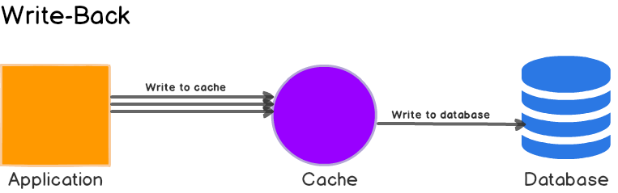

系统设计
System Design 总结
《搞定系统设计：面试敲开大厂的门》
从 0 到 100 万用户的扩展
数据库的选择
先把服务器里计算和存储的服务器分离开来。
在如下情况下，可以考虑 NoSQL：
- 低延迟。
- 非结构化非关系型。
- 只需要序列化格式-或者对序列化格式友好。
- 需要存储海量数据。
scale up vs scale out
纵向扩展的缺点：
- 有硬性限制。
- 没有冗余。
横向扩展对大型应用更合适。
负载均衡器
failover 基于负载均衡器就够了，有了 LB 我们才能装多台服务器。
数据库复制
从换主很容易丢失数据，先要恢复脚本才能实现对数据的合法写和读。
缓存
读写模式
我们常用的缓存策略叫 Cache-Aside Cache，完整介绍在《Caching Strategies and How to Choose the Right One》。


-
如果是应用自己加在缓存，就是 cache aside；如果缓存自己带有 load 方法-比如 guava 的 loader 实现，则意味着 read through。我们用的 aws 的 cdn 就是 read through 模式。
-
很多 read through 的缓存不允许模型不一致-这一点现在并不是强约束了。

直写式缓存会让DB可能不一致。
 -
写穿：写 cache 同步写 db。
-
写绕（write around）：写db，后面等待加载。
-
写回：异步同步到 DB。
Facebook 有一篇文章讲一致性《Scaling Memcache at Facebook》。
过期策略
没有过期策略不能应对缓存更新失败的问题-等于对自己缓存投毒。
一致性
Facebook 有一篇文章讲一致性《Scaling Memcache at Facebook》。
单点故障
- 多部署节点
- 留有冗余内存
驱逐策略
在某些场景下，数据要区分冷热，把不够热的数据清理出内存，降本增效：
| 策略名称 | 淘汰范围 | 淘汰算法 | 描述 | 适用场景 |
|---|---|---|---|---|
| noeviction | 所有键（不淘汰） | 无 | 内存满时拒绝写入，返回错误 | 数据不能丢失，需应用层控制缓存大小 |
| allkeys-lru | 所有键 | LRU（最近最少使用） | 淘汰最久未被访问的键 | 纯缓存场景，访问具有时间局部性（如热门文章、会话） |
| allkeys-lfu | 所有键 | LFU（最不经常使用） | 淘汰访问频率最低的键 | 纯缓存场景，数据价值由访问频次决定（如商品详情页、API 接口） |
| allkeys-random | 所有键 | 随机 | 随机淘汰任意键 | 对缓存质量无要求，追求简单和性能 |
| volatile-lru | 仅带 TTL 的键 | LRU | 仅从设置了过期时间的键中，淘汰最久未用的 | 混合存储：既有缓存（有 TTL），又有持久化数据（无 TTL） |
| volatile-lfu | 仅带 TTL 的键 | LFU | 仅从设置了过期时间的键中，淘汰访问最少的 | 混合存储，希望优先清理低频缓存项 |
| volatile-ttl | 仅带 TTL 的键 | TTL（剩余生存时间） | 优先淘汰即将过期的键 | 缓存数据本身有明确生命周期，希望"自然过期"优先被清理 |
| volatile-random | 仅带 TTL 的键 | 随机 | 仅从带 TTL 的键中随机淘汰 | 混合存储，对淘汰策略无偏好 |
| 维度 | LRU（Least Recently Used） | LFU（Least Frequently Used） |
|---|---|---|
| 核心思想 | 淘汰最近最少访问的键 → 关注"时间上最近是否用过" | 淘汰访问频率最低的键 → 关注"总共被用了多少次" |
| 关注点 | 时间局部性（Temporal Locality） | 访问频率（Frequency） |
| 典型场景 | 用户刚访问过的页面，很可能再次访问（如新闻、视频） | 某个商品页每天被1000人访问，另一个只被访问了3次 → 保留高频的 |
| 优缺点 | ✅ 对短期热点敏感 ❌ 可能误杀"长期冷门但重要"的数据（如每周一次的报表） |
✅ 能保留长期高频数据 ❌ 可能保留"历史高热但已过时"的数据（如旧促销页） |
| 举例说明 | 假设 A 被访问：“1, 2, 3, 4, 5”，B 被访问：100 → LRU 认为 B 是冷数据，可能淘汰 B |
假设 A 被访问：“1, 2, 3, 4, 5”（共5次），B 被访问：100（共1次） → LFU 认为 B 是冷数据，淘汰 B |
| 现实类比 | 图书馆：把最长时间没借阅的书下架 | 图书馆：把借阅次数最少的书下架 |
| 类型 | 口诀 | 说明 |
|---|---|---|
| 前缀记范围 | “A = All, V = Volatile” | allkeys-* → 所有键都可删 volatile-* → 只删带 TTL 的 |
| 后缀记算法 | L-R-U = Last Recently Used L-F-U = Least Frequently Used |
LRU = 最久没用 LFU = 最少使用 |
| 选策略口诀 | 纯缓存 → allkeys 混合存 → volatile 要精准 → LRU/LFU 怕丢数据 → noeviction |
先看是不是纯缓存，再看要不要考虑访问模式 |
| LRU vs LFU | LRU：谁最"冷"（久没用）？ LFU：谁最"凉"（没人用）？ |
"冷"是时间，"凉"是频率 |
CDN
- 要有 ttl 意识。
- 要有动态 no cdn 的设计。
- 要有主动 invalidate 分发数据的意识。
数据中心
网飞的《Active-Active for Multi-Regional Resiliency》
消息队列
我们经常见到，但是被忽略 mq 使用场景：
- notification
- video process
- feed generation
记录日志、收集指标与自动化
- 主机级别指标：CPU、内存、磁盘I/O等。
- 聚合级别指标：比如整个数据库层的性能，整个缓存层的性能等。
- 关键业务指标：每日活跃用户数、留存率、收益等。
数据库扩展
纵向扩展
很容易变得“很贵”。
横向扩展
带有 sharding key 和 sharding 算法比较好。某些场景下要引入一个 sharding server。
重分片问题：后面用一致性 hash 比较好。
AKF 是作者的名字。
| 轴 | 拆分维度 | 一句话解释 | 典型招式 | 例子 |
|---|---|---|---|---|
| X 轴 | 水平复制 | 克隆无差别实例 | 加机器、上集群、主从/主主 | 同样代码部署 128 台，前面挂 SLB |
| Y 轴 | 业务/职责 | 按功能或数据类型拆 | 微服务、模块库、DDD 子域 | 把挂号系统拆成 患者服务、医生服务、支付服务 |
| Z 轴 | 用户/数据特征 | 按关键属性再切片 | 分库分表、单元化、地域机房 | 北京用户进北京机房，广州用户进广州机房 |
先 X 扛流量 → 再 Y 拆业务 → 再 Z 分数据，理论上可以无限扩展。
X 加机器，Y 拆功能，Z 分数据；
| Redis 场景 | 对应轴 |
|---|---|
| 主从/读写分离 | X – 克隆实例 |
| 用户缓存 vs 订单缓存分开 | Y – 按业务拆 |
| 集群模式按 CRC16 分片 | Z – 按数据特征拆 |
用户量达到甚至超过了100万
层次分离、存算分离、地域分区、冷热分离、动静分离、读写分离，使用监控。
- 让网络层无状态。
- 每一层都要有冗余。
- 尽量多缓存数据。
- 支持多个数据中心。
- 用CDN来承载静态资源。
- 通过分片来扩展数据层。
- 把不同架构层分成不同的服务。
- 监控你的系统并使用自动化工具。
封底估算（Back-of-the-Envelope Estimation）
2 的幂
| 2的幂 | 近似值 | 全称 | 缩写 |
|---|---|---|---|
| 210 | 1,000 | 1 Kilobyte | 1 KB |
| 220 | 1,000,000 | 1 Megabyte | 1 MB |
| 230 | 1,000,000,000 | 1 Gigabyte | 1 GB |
| 240 | 1,000,000,000,000 | 1 Terabyte | 1 TB |
| 250 | 1,000,000,000,000,000 | 1 Petabyte | 1 PB |
| 操作名称 | 耗时 |
|---|---|
| 查询L1缓存 | 0.5 ns |
| 分支预测错误 | 5 ns |
| 查询L2缓存 | 7 ns |
| 互斥锁定/解锁 | 100 ns |
| 查询内存 | 100 ns |
| 用Zippy压缩1KB数据 | 10,000 ns=10 μs |
| 通过带宽为1Gb/s的网络发送2KB数据 | 20,000 ns=20 μs |
| 从内存中顺序读取1MB数据 | 250,000 ns=250 μs |
| 数据在同一个数据中心往返一次 | 500,000 ns=500 μs |
| 在硬盘中查找数据 | 10,000,000 ns=10 ms |
| 从网络中顺序读取1MB数据 | 10,000,000 ns=10 ms |
| 从硬盘中顺序读取1MB数据 | 30,000,000 ns=30 ms |
| 将数据包从加利福尼亚发送至荷兰,再从荷兰返回加利福尼亚 | 150,000,000 ns=150 ms |
推算推特的 QPS
-
推特有3亿月活用户。
-
50%的用户每天都使用推特。
-
用户平均每天发两条推文。
-
10%的推文包含多媒体数据。
-
数据要存储5年。以下为根据上面的假设而估算出来的一些数据。(1)估算QPS（每秒查询量）。
-
每日活跃用户(DAU)=300，000，000×50%=150，000，000
-
推文QPS=150，000，000×2÷24小时÷3600秒≈3500
-
峰值QPS=2×推文QPS≈7000
-
平均推文大小。
- tweet_id：64字节。
- 文本：140字节。
- 多媒体文件：1MB。
-
多媒体数据存储量=150，000，000×2×10%×1MB=30TB/天
-
5年的多媒体数据存储量=30TB×365×5≈55PB
系统设计的框架
四个步骤
我们要尝试让模糊的问题清晰化，所以这个地方真正考察的是探索开放世界的能力。
理解问题并确定设计的边界
脱口而出的答案是不要做的事情。
工程师最重要的技能之一就是问正确的问题，做合适的假设，并收集构建系统需要的所有信息。所以，不要害怕提问。
问什么样的问题呢？问问题是为了准确理解需求。你可以从下面这些问题开始：
- 我们要构建什么样的具体功能？
- 该产品有多少用户？
- 公司预计多久需要扩展系统？预计3个月、6个月和1年后的系统规模是怎样的？
- 公司的技术栈是什么？有哪些现有服务可以直接用来简化设计？
候选人：这是一个移动应用，还是一个网页应用？或者都是？
面试官：都是。
候选人：这个产品最重要的功能是什么？
面试官：可以发布帖子，幵且可以看到朋友的动态。
候选人：这个news feed系统中的帖子是按时间倒序排列的，还是按其他特定顺序排列的？特定顺序指的是每个帖子都有不同的权重。比如，和你亲近的伙伴的帖子比其他人的帖子更重要。
面试官：简单点吧，我们假定是按时间倒序排列的。
候选人：一个用户最多可以有多少个好友？
面试官：5000。
候选人：网络流量有多少？
面试官：日活用户(DAU)为1000万。
候选人：帖子中包含图像、视频吗？还是只有文字？
面试官：可以包含多媒体文件，包括图像和视频。以上是你可以问面试官的一些样例问题。理解需求并厘清不明确的地方很重要。为设计制定一个初始蓝图。可以征求面试官的反馈，把面试官当作自己的队友，一起工作。很多优秀的面试官是愿意参与讨论的。
提议高层级的设计并获得认同
可能可以包括数据库，也可能不包括数据库：
- 为设计制定一个初始蓝图。可以征求面试官的反馈，把面试官当作自己的队友，一起工作。很多优秀的面试官是愿意参与讨论的。
- 在白板或者纸上用关键组件画出框图，可能包括客户端（移动端/Web端）、API、Web服务器、数据存储、缓存、CDN、消息队列等。
- 做封底估算，评估你的初步设计是否满足系统需求。你需要表达出自己的思考过程，将思考过程公开。在深入研究之前，如果有必要做封底估算，要先就此和面试官进行沟通。
第三步：设计继续深入
不要陷入有趣的问题中。
你应该和面试官一起识别架构中的组件并对它们划出优先级顺序。值得强调的是，每次面试都是不同的。有时，面试官可能会透露她想要专注于高层级设计。有时，在高级候选人的面试中，讨论可能会集中在系统性能特征上，重点关注系统瓶颈和资源估计。在大部分情况下，面试官可能希望你深入探讨一些系统组件设计的细节。例如，对于URL缩短器，深入研究把长URL转换成短URL的哈希函数的设计会很有趣；对于一个聊天系统，如何减少延时、如何管理和显示用户在线/离线状态会是两个有趣的话题。
面试中的时间管理是至关重要的，因为你很容易就会陷入一些无法证明自己能力的小细节中。你必须向面试官展示自己的能力。尽量不要陷入不必要的细节讨论。比如，在系统设计面试中，详细谈论Facebook的feed排名所用的EdgeRank算法并不是理智的做法，因为这会占用你许多宝贵的时间，而且无法展示你设计可扩展系统的能力。
第四步：总结
- 面试官可能想让你识别出系统的瓶颈并讨论潜在的改进方案。永远不要说你的设计是完美的，不需要改进。总有一些地方可以改进。这是一个好机会，你可以展示批判性思维，给面试官留下好的最终印象。
- 给面试官扼要复述你的设计方案是有用的。如果你提出了几个设计方案，那么这一点就特别重要。在一个很长的会谈后，重新唤起面试官的记忆是对面试的最终结果有帮助的。
- 故障场景（服务器故障、数据包丢失等）值得讨论。
- 运维问题值得讨论。比如，怎样监控指标和错误日志？如何发布系统？
- 怎样应对下一次扩展也是一个重要话题。举个例子，如果你现在的设计支持100万用户，你需要改变什么才能支持1000万用户？
- 如果还有时间，你可以提出其他的改进点。
禁忌
- 对于常见的面试问题没有做好准备。
- 在没有弄清需求和假设之前就给出解决方案。
- 在面试一开始就讨论关于某一组件的大量细节。请先给出高层级设计后再深入讨论细节。
- 思路卡住的时候，自己干着急。如果你一时找不到解题的突破口，去找面试官要点提示，不要犹豫。
- 不沟通。再说一次，一定要沟通。别在那里一个人默默思考。
- 认为给出设计方案后面试就结束了。记住，面试官说结束才是真的结束。要尽早且尽量频繁地征求面试官的反馈。
设计限流器
- 搞清楚使用场景。
- 确定限流位置：客户端、服务端、中间件。
- 确定限流算法：最详细的限流算法是滑动日志，最省内存的限流算法是 GCRA-令牌类算法。
设计一致性哈希系统
哈希空间和哈希环
如果我们不使用哈希环，则我们增减服务器的时候，哈希环归给各个服务器是不均匀的。
但是如果我们使用哈希环，则我们新增服务器时，环的变动是：
[s0_0, s1_0, s0_1, s1_1] -> [s0_0, s1_0, s2_0, s0_1, s1_1, s2_1]。每个大区域均匀地从2分变成了3分，减少服务器的时候正好反过来。
解决冲突
要运用 CAP 理论和向量冲突来解决问题。
设计分布式id生成器
潜在方案
多主复制
Multi-Master-Replication 的一个实践。有几个服务器，每个服务器就从自己的上一个发号得到下一个发号，发号之间是有空洞的。
这种空洞方法不是很能应对增加或者减少服务器。
UUID
- UUID 太长。
- 不随时间增加。
- 可能是非数字的。
GUID 是 UUID 的一个实现。
工单服务器算法
flicker 方案，原文在《Ticket Servers: Distributed Unique Primary Keys on the Cheap》，翻译在《Ticket Servers: Distributed Unique Primary Keys on the Cheap（经济高效的分布式ID生成方案） 翻译》。
这类算法的起源是 MySQL 的 auto-increment 不够用：速度不够快、且不能保证跨库唯一性。
Flickr的Ticket
Servers是一个专用的数据库服务器，上面只有一个数据库，在该数据库中，有像Tickets32这样的表用于32位ID，以及Tickets64用于64位ID。Tickets64的模式看起来像这样：
CREATE TABLE `Tickets64` ( `id` bigint(20) unsigned NOT NULL
2
3
4
5auto_increment, `stub` char(1) NOT NULL default '', PRIMARY KEY
(`id`), UNIQUE KEY `stub` (`stub`) ) ENGINE=InnoDB ```
从Tickets64中选择*返回一个单独的行，看起来像这样：±------------------±-----+ | id | stub |
±------------------±-----+ | 72157623227190423 | a |
±------------------±-----+ ```当我需要一个新的全局唯一的64位ID时，执行以下SQL：
LAST_INSERT_ID(); ``` 如果不想让Ticket Servers成为一个单点故障。可以通过运行两个Ticket Servers来实现“高可用性”。在当前的写入/更新量下，服务器之间的复制会有问题，而锁定会严重影响网站的性能。但是，可以通过将ID空间一分为二，分别处理偶数和奇数，具体配置如下： TicketServer1： ``` auto-increment-increment = 2 auto-increment-offset = 1 ``` TicketServer2： ``` auto-increment-increment = 2 auto-increment-offset = 2 ``` 所以就是这样 它并不是特别优雅，但自从2006年1月13日（黑色星期五）投入生产以来，它对来说工作得惊人的好，是Flickr工程“会工作的最愚蠢事物”设计原则的一个很好的例子。（有缺点，但是能用）。
-
解决性能瓶颈 -> 通过“隔离”
- Ticket Server 是一个专用的数据库服务器。它的硬件可以很普通，数据库里只有一张极小的表（Tickets64）。
- 这张表永远只有一行数据！REPLACE INTO 语句的作用是：如果 stub=‘a’ 的行存在，就更新它；如果不存在，就插入。因为 stub 是唯一键，所以这个操作实际上永远是更新那唯一的一行。
- 每次执行 REPLACE INTO，auto_increment 计数器都会加 1（或按步长增加），然后 SELECT LAST_INSERT_ID() 能极快地获取这个新 ID。
- 关键点：这个数据库不处理任何其他业务逻辑。没有复杂的 JOIN，没有大量的读写，没有慢查询。它只做一件事：发号。这就像把一个繁忙大公司的前台接待员，换成了一台专门的、高速的取号机。请求 ID 的操作变得极其轻量和快速，完全不会阻塞主业务数据库。
-
解决水平扩展 -> 通过“中心化”
- Ticket Server 成为了全局唯一的 ID 颁发机构。
- 现在，无论你的应用服务器要往 Photos_DB1 还是 Photos_DB2 写数据，它都遵循一个新流程：
- 先向 Ticket Server 请求一个 ID。
- 拿到这个全局唯一的 ID。
- 带着这个 ID 去对应的业务数据库分片（Photos_DB_x）中执行 INSERT 操作。
- 这样，所有 ID 都来自同一个源头，自然就保证了全局唯一性，分库分表的问题迎刃而解。
-
解决单点故障 -> 通过“奇偶分离”
- 这正是你提到的 auto-increment-increment 和 auto-increment-offset 的妙用。
- 他们设置了两台 Ticket Server，一台只生成奇数 ID (1, 3, 5, …)，另一台只生成偶数 ID (2, 4, 6, …)。
- 在正常情况下，应用可以轮流向两台服务器请求 ID，实现负载均衡。
- 更重要的是高可用性：如果奇数服务器宕机了，应用层可以立刻切换，只从偶数服务器请求 ID。系统虽然损失了一半的 ID 生成能力，但核心业务完全不受影响，网站不会宕机。
- 这种方案避免了传统主从复制的延迟和复杂性，用一种极其简单、甚至有点“笨拙”的方式实现了高可用，完美体现了 Flickr “会工作的最愚蠢事物”（The stupidest thing that could possibly work）的设计哲学。
雪花算法

选择多少位时间戳是“寿命”、“规模”和“并发”的权衡。
41位用来表示毫秒等于可以使用69年。
如果不够用，则我们可以重置这69年的时间起点、或者调整41位的位数。
时间区间、数据中心、机器id给与我们剩余12位的空间，意味着每毫秒可以发4096个号，对于每秒并发10000个号的请求是足够的。
snowflake 本身不可计算订单量，基于号段的可以；基于时间戳的方案都需要小心回拨。有workerId的方案要小心workerId冲突。
基于号段的方案依赖于数据库落盘-特别是在收减时间戳的场景下，需要监控和预热。